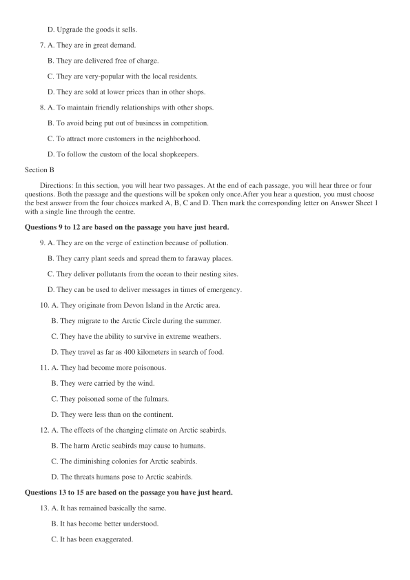
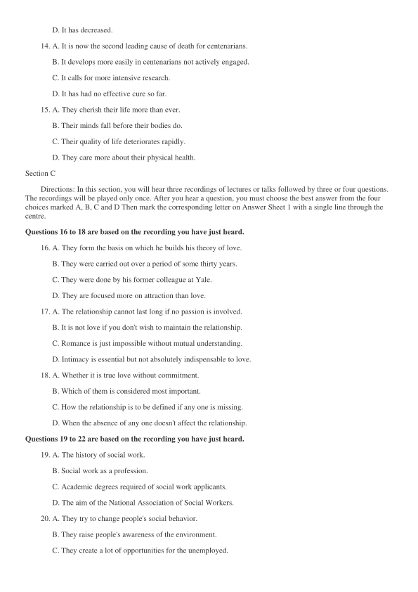
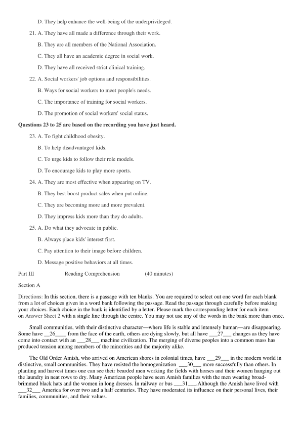
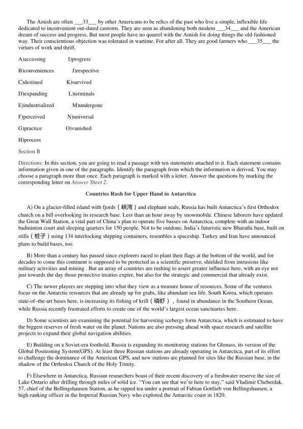
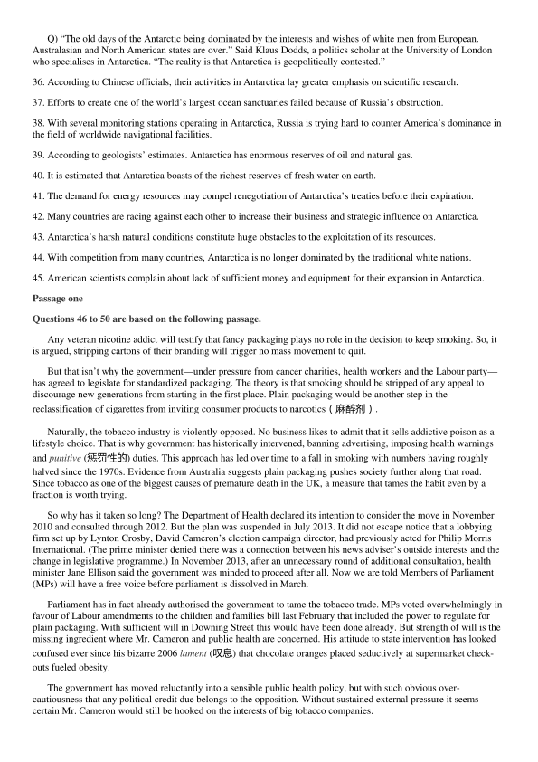

第 1 / 10 页

2016 年12 月大学英语六级考试（第2 套）
Part Ⅰ
Writing
(30 minutes)
Directions: For this part, you are allowed 30 minutes to write a short essay on creation. Your essay should include the
importance of creation and measures to be taken to encourage creation. You are required to write at least 150 words
but no more than 200 words.
Part II
Listening Comprehension
(30 minutes)
Section A
Directions: In this section, you will hear three news reports. At the end of each news report, you will hear two or three
questions. Both the news report and the questions will be spoken only once. After you hear a question, you must
choose the best answer from the four choices marked A), B), C) and D). Then mark the corresponding letter on
Answer Sheet 1 with a single line through the centre.
Questions 1 to 4 are based on the conversation you have just heard.
1. A. They were proud of their cuisine.
B. They were particular about food.
C. They were all good at cooking.
D. They were fond of bacon and eggs.
2. A. His parents.
B. His friends.
C. His parents' friends.
D. His schoolmates.
3. A. No one of the group ate it.
B. It was a little overcooked.
C. No tea was served with the meal.
D. It was the real English breakfast.
4. A. It was full of excitement.
B. It was rather disappointing.
C. It was a risky experience.
D. It was really extraordinary.
Questions 5 to 8 are based on the conversation you have just heard.
5. A. The woman's earnings over the years.
B. The key to running a shop at a low cost.
C. The business success of the woman's shop.
D. The woman's relationship with other shops.
6. A. Keep down its expenses.
B. Expand its business scale.
C. Improve its customer service.
查看 / 复制本页文字
2016 年12 月大学英语六级考试（第2 套） Part Ⅰ Writing (30 minutes) Directions: For this part, you are allowed 30 minutes to write a short essay on creation. Your essay should include the importance of creation and measures to be taken to encourage creation. You are required to write at least 150 words but no more than 200 words. Part II Listening Comprehension (30 minutes) Section A Directions: In this section, you will hear three news reports. At the end of each news report, you will hear two or three questions. Both the news report and the questions will be spoken only once. After you hear a question, you must choose the best answer from the four choices marked A), B), C) and D). Then mark the corresponding letter on Answer Sheet 1 with a single line through the centre. Questions 1 to 4 are based on the conversation you have just heard. 1. A. They were proud of their cuisine. B. They were particular about food. C. They were all good at cooking. D. They were fond of bacon and eggs. 2. A. His parents. B. His friends. C. His parents' friends. D. His schoolmates. 3. A. No one of the group ate it. B. It was a little overcooked. C. No tea was served with the meal. D. It was the real English breakfast. 4. A. It was full of excitement. B. It was rather disappointing. C. It was a risky experience. D. It was really extraordinary. Questions 5 to 8 are based on the conversation you have just heard. 5. A. The woman's earnings over the years. B. The key to running a shop at a low cost. C. The business success of the woman's shop. D. The woman's relationship with other shops. 6. A. Keep down its expenses. B. Expand its business scale. C. Improve its customer service.
第 2 / 10 页

D. Upgrade the goods it sells.
7. A. They are in great demand.
B. They are delivered free of charge.
C. They are very-popular with the local residents.
D. They are sold at lower prices than in other shops.
8. A. To maintain friendly relationships with other shops.
B. To avoid being put out of business in competition.
C. To attract more customers in the neighborhood.
D. To follow the custom of the local shopkeepers.
Section B
Directions: In this section, you will hear two passages. At the end of each passage, you will hear three or four
questions. Both the passage and the questions will be spoken only once.After you hear a question, you must choose
the best answer from the four choices marked A, B, C and D. Then mark the corresponding letter on Answer Sheet 1
with a single line through the centre.
Questions 9 to 12 are based on the passage you have just heard.
9. A. They are on the verge of extinction because of pollution.
B. They carry plant seeds and spread them to faraway places.
C. They deliver pollutants from the ocean to their nesting sites.
D. They can be used to deliver messages in times of emergency.
10. A. They originate from Devon Island in the Arctic area.
B. They migrate to the Arctic Circle during the summer.
C. They have the ability to survive in extreme weathers.
D. They travel as far as 400 kilometers in search of food.
11. A. They had become more poisonous.
B. They were carried by the wind.
C. They poisoned some of the fulmars.
D. They were less than on the continent.
12. A. The effects of the changing climate on Arctic seabirds.
B. The harm Arctic seabirds may cause to humans.
C. The diminishing colonies for Arctic seabirds.
D. The threats humans pose to Arctic seabirds.
Questions 13 to 15 are based on the passage you have just heard.
13. A. It has remained basically the same.
B. It has become better understood.
C. It has been exaggerated.
查看 / 复制本页文字
D. Upgrade the goods it sells. 7. A. They are in great demand. B. They are delivered free of charge. C. They are very-popular with the local residents. D. They are sold at lower prices than in other shops. 8. A. To maintain friendly relationships with other shops. B. To avoid being put out of business in competition. C. To attract more customers in the neighborhood. D. To follow the custom of the local shopkeepers. Section B Directions: In this section, you will hear two passages. At the end of each passage, you will hear three or four questions. Both the passage and the questions will be spoken only once.After you hear a question, you must choose the best answer from the four choices marked A, B, C and D. Then mark the corresponding letter on Answer Sheet 1 with a single line through the centre. Questions 9 to 12 are based on the passage you have just heard. 9. A. They are on the verge of extinction because of pollution. B. They carry plant seeds and spread them to faraway places. C. They deliver pollutants from the ocean to their nesting sites. D. They can be used to deliver messages in times of emergency. 10. A. They originate from Devon Island in the Arctic area. B. They migrate to the Arctic Circle during the summer. C. They have the ability to survive in extreme weathers. D. They travel as far as 400 kilometers in search of food. 11. A. They had become more poisonous. B. They were carried by the wind. C. They poisoned some of the fulmars. D. They were less than on the continent. 12. A. The effects of the changing climate on Arctic seabirds. B. The harm Arctic seabirds may cause to humans. C. The diminishing colonies for Arctic seabirds. D. The threats humans pose to Arctic seabirds. Questions 13 to 15 are based on the passage you have just heard. 13. A. It has remained basically the same. B. It has become better understood. C. It has been exaggerated.
第 3 / 10 页

D. It has decreased.
14. A. It is now the second leading cause of death for centenarians.
B. It develops more easily in centenarians not actively engaged.
C. It calls for more intensive research.
D. It has had no effective cure so far.
15. A. They cherish their life more than ever.
B. Their minds fall before their bodies do.
C. Their quality of life deteriorates rapidly.
D. They care more about their physical health.
Section C
Directions: In this section, you will hear three recordings of lectures or talks followed by three or four questions.
The recordings will be played only once. After you hear a question, you must choose the best answer from the four
choices marked A, B, C and D Then mark the corresponding letter on Answer Sheet 1 with a single line through the
centre.
Questions 16 to 18 are based on the recording you have just heard.
16. A. They form the basis on which he builds his theory of love.
B. They were carried out over a period of some thirty years.
C. They were done by his former colleague at Yale.
D. They are focused more on attraction than love.
17. A. The relationship cannot last long if no passion is involved.
B. It is not love if you don't wish to maintain the relationship.
C. Romance is just impossible without mutual understanding.
D. Intimacy is essential but not absolutely indispensable to love.
18. A. Whether it is true love without commitment.
B. Which of them is considered most important.
C. How the relationship is to be defined if any one is missing.
D. When the absence of any one doesn't affect the relationship.
Questions 19 to 22 are based on the recording you have just heard.
19. A. The history of social work.
B. Social work as a profession.
C. Academic degrees required of social work applicants.
D. The aim of the National Association of Social Workers.
20. A. They try to change people's social behavior.
B. They raise people's awareness of the environment.
C. They create a lot of opportunities for the unemployed.
查看 / 复制本页文字
D. It has decreased. 14. A. It is now the second leading cause of death for centenarians. B. It develops more easily in centenarians not actively engaged. C. It calls for more intensive research. D. It has had no effective cure so far. 15. A. They cherish their life more than ever. B. Their minds fall before their bodies do. C. Their quality of life deteriorates rapidly. D. They care more about their physical health. Section C Directions: In this section, you will hear three recordings of lectures or talks followed by three or four questions. The recordings will be played only once. After you hear a question, you must choose the best answer from the four choices marked A, B, C and D Then mark the corresponding letter on Answer Sheet 1 with a single line through the centre. Questions 16 to 18 are based on the recording you have just heard. 16. A. They form the basis on which he builds his theory of love. B. They were carried out over a period of some thirty years. C. They were done by his former colleague at Yale. D. They are focused more on attraction than love. 17. A. The relationship cannot last long if no passion is involved. B. It is not love if you don't wish to maintain the relationship. C. Romance is just impossible without mutual understanding. D. Intimacy is essential but not absolutely indispensable to love. 18. A. Whether it is true love without commitment. B. Which of them is considered most important. C. How the relationship is to be defined if any one is missing. D. When the absence of any one doesn't affect the relationship. Questions 19 to 22 are based on the recording you have just heard. 19. A. The history of social work. B. Social work as a profession. C. Academic degrees required of social work applicants. D. The aim of the National Association of Social Workers. 20. A. They try to change people's social behavior. B. They raise people's awareness of the environment. C. They create a lot of opportunities for the unemployed.
第 4 / 10 页

D. They help enhance the well-being of the underprivileged.
21. A. They have all made a difference through their work.
B. They are all members of the National Association.
C. They all have an academic degree in social work.
D. They have all received strict clinical training.
22. A. Social workers' job options and responsibilities.
B. Ways for social workers to meet people's needs.
C. The importance of training for social workers.
D. The promotion of social workers' social status.
Questions 23 to 25 are based on the recording you have just heard.
23. A. To fight childhood obesity.
B. To help disadvantaged kids.
C. To urge kids to follow their role models.
D. To encourage kids to play more sports.
24. A. They are most effective when appearing on TV.
B. They best boost product sales when put online.
C. They are becoming more and more prevalent.
D. They impress kids more than they do adults.
25. A. Do what they advocate in public.
B. Always place kids' interest first.
C. Pay attention to their image before children.
D. Message positive behaviors at all times.
Part III
Reading Comprehension
(40 minutes)
Section A
Directions: In this section, there is a passage with ten blanks. You are required to select out one word for each blank
from a lot of choices given in a word bank following the passage. Read the passage through carefully before making
your choices. Each choice in the bank is identified by a letter. Please mark the corresponding letter for each item
on Answer Sheet 2 with a single line through the centre. You may not use any of the words in the bank more than once.
Small communities, with their distinctive character—where life is stable and intensely human—are disappearing.
Some have __26____ from the face of the earth, others are dying slowly, but all have ___27___ changes as they have
come into contact with an ___28___ machine civilization. The merging of diverse peoples into a common mass has
produced tension among members of the minorities and the majority alike.
The Old Order Amish, who arrived on American shores in colonial times, have ___29___ in the modern world in
distinctive, small communities. They have resisted the homogenization ___30___ more successfully than others. In
planting and harvest times one can see their bearded men working the fields with horses and their women hanging out
the laundry in neat rows to dry. Many American people have seen Amish families with the men wearing broad-
brimmed black hats and the women in long dresses. In railway or bus ___31___.Although the Amish have lived with
___32___ America for over two and a half centuries. They have moderated its influence on their personal lives, their
families, communities, and their values.
查看 / 复制本页文字
D. They help enhance the well-being of the underprivileged. 21. A. They have all made a difference through their work. B. They are all members of the National Association. C. They all have an academic degree in social work. D. They have all received strict clinical training. 22. A. Social workers' job options and responsibilities. B. Ways for social workers to meet people's needs. C. The importance of training for social workers. D. The promotion of social workers' social status. Questions 23 to 25 are based on the recording you have just heard. 23. A. To fight childhood obesity. B. To help disadvantaged kids. C. To urge kids to follow their role models. D. To encourage kids to play more sports. 24. A. They are most effective when appearing on TV. B. They best boost product sales when put online. C. They are becoming more and more prevalent. D. They impress kids more than they do adults. 25. A. Do what they advocate in public. B. Always place kids' interest first. C. Pay attention to their image before children. D. Message positive behaviors at all times. Part III Reading Comprehension (40 minutes) Section A Directions: In this section, there is a passage with ten blanks. You are required to select out one word for each blank from a lot of choices given in a word bank following the passage. Read the passage through carefully before making your choices. Each choice in the bank is identified by a letter. Please mark the corresponding letter for each item on Answer Sheet 2 with a single line through the centre. You may not use any of the words in the bank more than once. Small communities, with their distinctive character—where life is stable and intensely human—are disappearing. Some have __26____ from the face of the earth, others are dying slowly, but all have ___27___ changes as they have come into contact with an ___28___ machine civilization. The merging of diverse peoples into a common mass has produced tension among members of the minorities and the majority alike. The Old Order Amish, who arrived on American shores in colonial times, have ___29___ in the modern world in distinctive, small communities. They have resisted the homogenization ___30___ more successfully than others. In planting and harvest times one can see their bearded men working the fields with horses and their women hanging out the laundry in neat rows to dry. Many American people have seen Amish families with the men wearing broad- brimmed black hats and the women in long dresses. In railway or bus ___31___.Although the Amish have lived with ___32___ America for over two and a half centuries. They have moderated its influence on their personal lives, their families, communities, and their values.
第 5 / 10 页

The Amish are often ___33___ by other Americans to be relics of the past who live a simple, inflexible life
dedicated to inconvenient out-dated customs. They are seen as abandoning both modem ___34___ and the American
dream of success and progress, But most people have no quarrel with the Amish for doing things the old-fashioned
way. Their conscientious objection was tolerated in wartime. For after all. They are good farmers who ___35___ the
virtues of work and thrift.
A)accessing
I)progress
B)conveniences
J)respective
C)destined
K)survived
D)expanding
L)terminals
E)industrialized
M)undergone
F)perceived
N)universal
G)practice
O)vanished
H)process
Section B
Directions: In this section, you are going to read a passage with ten statements attached to it. Each statement contains
information given in one of the paragraphs. Identify the paragraph from which the information is derived. You may
choose a paragraph more than once. Each paragraph is marked with a letter. Answer the questions by marking the
corresponding letter on Answer Sheet 2.
Countries Rush for Upper Hand in Antarctica
A) On a glacier-filled island with fjords（峡湾）and elephant seals, Russia has built Antarctica’s first Orthodox
church on a bill overlooking its research base. Less than an hour away by snowmobile. Chinese laborers have updated
the Great Wall Station, a vital part of China’s plan to operate five basses on Antarctica, complete with an indoor
badminton court and sleeping quarters for 150 people. Not to be outdone, India’s futuristic new Bharathi base, built on
stills（桩子）using 134 interlocking shipping containers, resembles a spaceship. Turkey and Iran have announced
plans to build bases, too.
B) More than a century has passed since explorers raced to plant their flags at the bottom of the world, and for
decades to come this continent is supposed to be protected as a scientific preserve, shielded from intrusions like
military activities and mining . But an array of countries are rushing to assert greater influence here, with an eye not
just towards the day those protective treaties expire, but also for the strategic and commercial that already exist.
C) The newer players are stepping into what they view as a treasure house of resources. Some of the ventures
focus on the Antarctic resources that are already up for grabs, like abundant sea life. South Korea, which operates
state-of–the-art bases here, is increasing its fishing of krill（磷虾），found in abundance in the Southern Ocean,
while Russia recently frustrated efforts to create one of the world’s largest ocean sanctuaries here.
D) Some scientists are examining the potential for harvesting icebergs form Antarctica, which is estimated to have
the biggest reserves of fresh water on the planet. Nations are also pressing ahead with space research and satellite
projects to expand their global navigation abilities.
E) Building on a Soviet-era foothold, Russia is expanding its monitoring stations for Glonass, its version of the
Global Positioning System(GPS). At least three Russian stations are already operating in Antarctica, part of its effort
to challenge the dominance of the American GPS, and new stations are planned for sites like the Russian base, in the
shadow of the Orthodox Church of the Holy Trinity.
F) Elsewhere in Antarctica, Russian researchers boast of their recent discovery of a freshwater reserve the size of
Lake Ontario after drilling through miles of solid ice. “You can see that we’re here to stay,” said Vladimir Cheberdak,
57, chief of the Bellingshausen Station, as he sipped tea under a portrait of Fabian Gottlieb von Bellingshausen, a
high-ranking officer in the Imperial Russian Navy who explored the Antarctic coast in 1820.
查看 / 复制本页文字
The Amish are often ___33___ by other Americans to be relics of the past who live a simple, inflexible life dedicated to inconvenient out-dated customs. They are seen as abandoning both modem ___34___ and the American dream of success and progress, But most people have no quarrel with the Amish for doing things the old-fashioned way. Their conscientious objection was tolerated in wartime. For after all. They are good farmers who ___35___ the virtues of work and thrift. A)accessing I)progress B)conveniences J)respective C)destined K)survived D)expanding L)terminals E)industrialized M)undergone F)perceived N)universal G)practice O)vanished H)process Section B Directions: In this section, you are going to read a passage with ten statements attached to it. Each statement contains information given in one of the paragraphs. Identify the paragraph from which the information is derived. You may choose a paragraph more than once. Each paragraph is marked with a letter. Answer the questions by marking the corresponding letter on Answer Sheet 2. Countries Rush for Upper Hand in Antarctica A) On a glacier-filled island with fjords（峡湾）and elephant seals, Russia has built Antarctica’s first Orthodox church on a bill overlooking its research base. Less than an hour away by snowmobile. Chinese laborers have updated the Great Wall Station, a vital part of China’s plan to operate five basses on Antarctica, complete with an indoor badminton court and sleeping quarters for 150 people. Not to be outdone, India’s futuristic new Bharathi base, built on stills（桩子）using 134 interlocking shipping containers, resembles a spaceship. Turkey and Iran have announced plans to build bases, too. B) More than a century has passed since explorers raced to plant their flags at the bottom of the world, and for decades to come this continent is supposed to be protected as a scientific preserve, shielded from intrusions like military activities and mining . But an array of countries are rushing to assert greater influence here, with an eye not just towards the day those protective treaties expire, but also for the strategic and commercial that already exist. C) The newer players are stepping into what they view as a treasure house of resources. Some of the ventures focus on the Antarctic resources that are already up for grabs, like abundant sea life. South Korea, which operates state-of–the-art bases here, is increasing its fishing of krill（磷虾），found in abundance in the Southern Ocean, while Russia recently frustrated efforts to create one of the world’s largest ocean sanctuaries here. D) Some scientists are examining the potential for harvesting icebergs form Antarctica, which is estimated to have the biggest reserves of fresh water on the planet. Nations are also pressing ahead with space research and satellite projects to expand their global navigation abilities. E) Building on a Soviet-era foothold, Russia is expanding its monitoring stations for Glonass, its version of the Global Positioning System(GPS). At least three Russian stations are already operating in Antarctica, part of its effort to challenge the dominance of the American GPS, and new stations are planned for sites like the Russian base, in the shadow of the Orthodox Church of the Holy Trinity. F) Elsewhere in Antarctica, Russian researchers boast of their recent discovery of a freshwater reserve the size of Lake Ontario after drilling through miles of solid ice. “You can see that we’re here to stay,” said Vladimir Cheberdak, 57, chief of the Bellingshausen Station, as he sipped tea under a portrait of Fabian Gottlieb von Bellingshausen, a high-ranking officer in the Imperial Russian Navy who explored the Antarctic coast in 1820.
第 6 / 10 页
G) Antarctica’s mineral, oil and gas wealth are a longer-term prize. The treaty banning mining here, shielding
coveted(令人垂诞的)reserves of iron ore, coal and chromium, comes up for review in 2048. Researchers recently
found kimberlite(金伯利岩) deposits hinting at the existence of diamonds. And while assessments vary widely,
geologists estimate that Antarctica holds at least 36 billion barrels of oil and natural gas.
H) Beyond the Antarctic treaties, huge obstacles persist to tapping these resources, like drifting icebergs that could
jeopardize offshore platforms. Then there is Antarctic’s remoteness, with some mineral deposits found in windswept
locations on a continent that is larger the Europe and where winter temperatures hover around minus 55 degrees
Celsius.
I) But advances in technology might make Antarctica a lot more accessible three decades from now. And even
before then, scholars warn, the demand for resources in an energy-hungry world could raise pressure to renegotiate
Antarctica’s treaties, possibly allowing more commercial endeavours here well before the prohibitions against them
expire. The research stations on King George lsland offer a glimpse into the long game on this ice-blanketed continent
as nations assert themselves, eroding the sway long held by countries like the United States, Britain. Australia and
New Zealand.
J) Being stationed in Antarctica involves adapting to life on the planet’s driest, windiest and coldest continent, yet
each nation manages to make itself at home. Bearded Russian priests offer regular services at the Orthodox church for
the 16 or so Russian speakers who spend the winter at the base, largely polar scientists in fields like glaciology and
meteorology. Their number climbs to about 40 in the warmer summer months. China has arguably the fastest growing
operations in Antarctica. It opened its fourth station last year and is pressing ahead with plans to build a fifth. It is
building its second ice-breaking ship and setting up research drilling operations on an ice dome 13,422 feet above sea
level that is one the planet’s coldest places. Chinese officials say the expansion in Antarctica prioritises scientific
research. But they also acknowledge that concerns about “resource security” influence their moves.
K) China’s newly renovated Great Wall Station on King George lsland makes the Russian and Chilean bases here
seem outdated. ”We do weather monitoring here and other research.” Ning Xu, 53, the chief of the Chinese base, said
over tea during a fierce blizzard(暴风雪) in late November. The large base he leads resembles a snowed-in college
campus on holiday break, with the capacity to sleep more than 10 times the 13 people who were staying on through
the Antarctic winter. Yong Yu, a Chinese microbiologist, showed off the spacious building, with empty desks under
an illustrated timeline detailing the rapid growth of China’s Antarctic operations since the 1980s “We now feel
equipped to grow,” he said.
L) As some countries expand operations in Antarctica, the United States maintains three year-round stations on the
continent with more than 1,000 people during the southern hemisphere’s summer, including those at the Amundsen
Scott station, built in 1956 at an elevation of 9,301 feet on a plateau at the South Pole. But US researchers quietly
complain about budget restraints and having far fewer icebreakers the Russia, limiting the reach of the United States in
Antarctica.
M) Scholars warn that Antarctica’s political drift could blur the distinction between military and civilian activities
long before the continent’s treaties come up for renegotiation, especially in parts of Antarctica that are ideal for
intercepting(拦截) signals from satellites or retasking satellite systems, potentially enhancing global electronic
intelligence operations.
N) Some countries have had a hard time here, Brazil opened a research station in 1984, but it was largely
destroyed by a fire that killed two members of the navy in 2012, the same year that a diesel-laden Brazilian barge sank
near the base. As if that were not enough. a Brazilian C-130 Hercules military transport plane has remained stranded
near the runway of Chile’s air base here since it crash-landed in 2014.
O) However, Brazil’s stretch of misfortune has created opportunities for China, with a Chinese company winning
the $100 million contract in 2015 to rebuild the Brazilian station.
P) Amid all the changes, Antarctica maintains its allure. South Korea opened its second Antarctic research base in
2014, describing it as a way to test robots developed by Korean researchers for use in extreme conditions. With
Russia’s help, Belarus is preparing to build this first Antarctic base. Colombia said this year that it planned to join
other South American nations with bases in Antarctica.
查看 / 复制本页文字
G) Antarctica’s mineral, oil and gas wealth are a longer-term prize. The treaty banning mining here, shielding coveted(令人垂诞的)reserves of iron ore, coal and chromium, comes up for review in 2048. Researchers recently found kimberlite(金伯利岩) deposits hinting at the existence of diamonds. And while assessments vary widely, geologists estimate that Antarctica holds at least 36 billion barrels of oil and natural gas. H) Beyond the Antarctic treaties, huge obstacles persist to tapping these resources, like drifting icebergs that could jeopardize offshore platforms. Then there is Antarctic’s remoteness, with some mineral deposits found in windswept locations on a continent that is larger the Europe and where winter temperatures hover around minus 55 degrees Celsius. I) But advances in technology might make Antarctica a lot more accessible three decades from now. And even before then, scholars warn, the demand for resources in an energy-hungry world could raise pressure to renegotiate Antarctica’s treaties, possibly allowing more commercial endeavours here well before the prohibitions against them expire. The research stations on King George lsland offer a glimpse into the long game on this ice-blanketed continent as nations assert themselves, eroding the sway long held by countries like the United States, Britain. Australia and New Zealand. J) Being stationed in Antarctica involves adapting to life on the planet’s driest, windiest and coldest continent, yet each nation manages to make itself at home. Bearded Russian priests offer regular services at the Orthodox church for the 16 or so Russian speakers who spend the winter at the base, largely polar scientists in fields like glaciology and meteorology. Their number climbs to about 40 in the warmer summer months. China has arguably the fastest growing operations in Antarctica. It opened its fourth station last year and is pressing ahead with plans to build a fifth. It is building its second ice-breaking ship and setting up research drilling operations on an ice dome 13,422 feet above sea level that is one the planet’s coldest places. Chinese officials say the expansion in Antarctica prioritises scientific research. But they also acknowledge that concerns about “resource security” influence their moves. K) China’s newly renovated Great Wall Station on King George lsland makes the Russian and Chilean bases here seem outdated. ”We do weather monitoring here and other research.” Ning Xu, 53, the chief of the Chinese base, said over tea during a fierce blizzard(暴风雪) in late November. The large base he leads resembles a snowed-in college campus on holiday break, with the capacity to sleep more than 10 times the 13 people who were staying on through the Antarctic winter. Yong Yu, a Chinese microbiologist, showed off the spacious building, with empty desks under an illustrated timeline detailing the rapid growth of China’s Antarctic operations since the 1980s “We now feel equipped to grow,” he said. L) As some countries expand operations in Antarctica, the United States maintains three year-round stations on the continent with more than 1,000 people during the southern hemisphere’s summer, including those at the Amundsen Scott station, built in 1956 at an elevation of 9,301 feet on a plateau at the South Pole. But US researchers quietly complain about budget restraints and having far fewer icebreakers the Russia, limiting the reach of the United States in Antarctica. M) Scholars warn that Antarctica’s political drift could blur the distinction between military and civilian activities long before the continent’s treaties come up for renegotiation, especially in parts of Antarctica that are ideal for intercepting(拦截) signals from satellites or retasking satellite systems, potentially enhancing global electronic intelligence operations. N) Some countries have had a hard time here, Brazil opened a research station in 1984, but it was largely destroyed by a fire that killed two members of the navy in 2012, the same year that a diesel-laden Brazilian barge sank near the base. As if that were not enough. a Brazilian C-130 Hercules military transport plane has remained stranded near the runway of Chile’s air base here since it crash-landed in 2014. O) However, Brazil’s stretch of misfortune has created opportunities for China, with a Chinese company winning the $100 million contract in 2015 to rebuild the Brazilian station. P) Amid all the changes, Antarctica maintains its allure. South Korea opened its second Antarctic research base in 2014, describing it as a way to test robots developed by Korean researchers for use in extreme conditions. With Russia’s help, Belarus is preparing to build this first Antarctic base. Colombia said this year that it planned to join other South American nations with bases in Antarctica.
第 7 / 10 页

Q) “The old days of the Antarctic being dominated by the interests and wishes of white men from European.
Australasian and North American states are over.” Said Klaus Dodds, a politics scholar at the University of London
who specialises in Antarctica. “The reality is that Antarctica is geopolitically contested.”
36. According to Chinese officials, their activities in Antarctica lay greater emphasis on scientific research.
37. Efforts to create one of the world’s largest ocean sanctuaries failed because of Russia’s obstruction.
38. With several monitoring stations operating in Antarctica, Russia is trying hard to counter America’s dominance in
the field of worldwide navigational facilities.
39. According to geologists’ estimates. Antarctica has enormous reserves of oil and natural gas.
40. It is estimated that Antarctica boasts of the richest reserves of fresh water on earth.
41. The demand for energy resources may compel renegotiation of Antarctica’s treaties before their expiration.
42. Many countries are racing against each other to increase their business and strategic influence on Antarctica.
43. Antarctica’s harsh natural conditions constitute huge obstacles to the exploitation of its resources.
44. With competition from many countries, Antarctica is no longer dominated by the traditional white nations.
45. American scientists complain about lack of sufficient money and equipment for their expansion in Antarctica.
Passage one
Questions 46 to 50 are based on the following passage.
Any veteran nicotine addict will testify that fancy packaging plays no role in the decision to keep smoking. So, it
is argued, stripping cartons of their branding will trigger no mass movement to quit.
But that isn’t why the government—under pressure from cancer charities, health workers and the Labour party—
has agreed to legislate for standardized packaging. The theory is that smoking should be stripped of any appeal to
discourage new generations from starting in the first place. Plain packaging would be another step in the
reclassification of cigarettes from inviting consumer products to narcotics（麻醉剂）.
Naturally, the tobacco industry is violently opposed. No business likes to admit that it sells addictive poison as a
lifestyle choice. That is why government has historically intervened, banning advertising, imposing health warnings
and punitive (惩罚性的) duties. This approach has led over time to a fall in smoking with numbers having roughly
halved since the 1970s. Evidence from Australia suggests plain packaging pushes society further along that road.
Since tobacco as one of the biggest causes of premature death in the UK, a measure that tames the habit even by a
fraction is worth trying.
So why has it taken so long? The Department of Health declared its intention to consider the move in November
2010 and consulted through 2012. But the plan was suspended in July 2013. It did not escape notice that a lobbying
firm set up by Lynton Crosby, David Cameron’s election campaign director, had previously acted for Philip Morris
International. (The prime minister denied there was a connection between his news adviser’s outside interests and the
change in legislative programme.) In November 2013, after an unnecessary round of additional consultation, health
minister Jane Ellison said the government was minded to proceed after all. Now we are told Members of Parliament
(MPs) will have a free voice before parliament is dissolved in March.
Parliament has in fact already authorised the government to tame the tobacco trade. MPs voted overwhelmingly in
favour of Labour amendments to the children and families bill last February that included the power to regulate for
plain packaging. With sufficient will in Downing Street this would have been done already. But strength of will is the
missing ingredient where Mr. Cameron and public health are concerned. His attitude to state intervention has looked
confused ever since his bizarre 2006 lament (叹息) that chocolate oranges placed seductively at supermarket check-
outs fueled obesity.
The government has moved reluctantly into a sensible public health policy, but with such obvious over-
cautiousness that any political credit due belongs to the opposition. Without sustained external pressure it seems
certain Mr. Cameron would still be hooked on the interests of big tobacco companies.
查看 / 复制本页文字
Q) “The old days of the Antarctic being dominated by the interests and wishes of white men from European. Australasian and North American states are over.” Said Klaus Dodds, a politics scholar at the University of London who specialises in Antarctica. “The reality is that Antarctica is geopolitically contested.” 36. According to Chinese officials, their activities in Antarctica lay greater emphasis on scientific research. 37. Efforts to create one of the world’s largest ocean sanctuaries failed because of Russia’s obstruction. 38. With several monitoring stations operating in Antarctica, Russia is trying hard to counter America’s dominance in the field of worldwide navigational facilities. 39. According to geologists’ estimates. Antarctica has enormous reserves of oil and natural gas. 40. It is estimated that Antarctica boasts of the richest reserves of fresh water on earth. 41. The demand for energy resources may compel renegotiation of Antarctica’s treaties before their expiration. 42. Many countries are racing against each other to increase their business and strategic influence on Antarctica. 43. Antarctica’s harsh natural conditions constitute huge obstacles to the exploitation of its resources. 44. With competition from many countries, Antarctica is no longer dominated by the traditional white nations. 45. American scientists complain about lack of sufficient money and equipment for their expansion in Antarctica. Passage one Questions 46 to 50 are based on the following passage. Any veteran nicotine addict will testify that fancy packaging plays no role in the decision to keep smoking. So, it is argued, stripping cartons of their branding will trigger no mass movement to quit. But that isn’t why the government—under pressure from cancer charities, health workers and the Labour party— has agreed to legislate for standardized packaging. The theory is that smoking should be stripped of any appeal to discourage new generations from starting in the first place. Plain packaging would be another step in the reclassification of cigarettes from inviting consumer products to narcotics（麻醉剂）. Naturally, the tobacco industry is violently opposed. No business likes to admit that it sells addictive poison as a lifestyle choice. That is why government has historically intervened, banning advertising, imposing health warnings and punitive (惩罚性的) duties. This approach has led over time to a fall in smoking with numbers having roughly halved since the 1970s. Evidence from Australia suggests plain packaging pushes society further along that road. Since tobacco as one of the biggest causes of premature death in the UK, a measure that tames the habit even by a fraction is worth trying. So why has it taken so long? The Department of Health declared its intention to consider the move in November 2010 and consulted through 2012. But the plan was suspended in July 2013. It did not escape notice that a lobbying firm set up by Lynton Crosby, David Cameron’s election campaign director, had previously acted for Philip Morris International. (The prime minister denied there was a connection between his news adviser’s outside interests and the change in legislative programme.) In November 2013, after an unnecessary round of additional consultation, health minister Jane Ellison said the government was minded to proceed after all. Now we are told Members of Parliament (MPs) will have a free voice before parliament is dissolved in March. Parliament has in fact already authorised the government to tame the tobacco trade. MPs voted overwhelmingly in favour of Labour amendments to the children and families bill last February that included the power to regulate for plain packaging. With sufficient will in Downing Street this would have been done already. But strength of will is the missing ingredient where Mr. Cameron and public health are concerned. His attitude to state intervention has looked confused ever since his bizarre 2006 lament (叹息) that chocolate oranges placed seductively at supermarket check- outs fueled obesity. The government has moved reluctantly into a sensible public health policy, but with such obvious over- cautiousness that any political credit due belongs to the opposition. Without sustained external pressure it seems certain Mr. Cameron would still be hooked on the interests of big tobacco companies.
第 8 / 10 页
46. What do chain smokers think of cigarette packaging?
A) Fancy packaging can help to engage new smokers.
B) It has little to do with the quality or taste of cigarettes.
C) Plain packaging discourages non-smokers from taking up smoking.
D) It has little impact on their decision whether or not to quit smoking.
47. What has the UK government agreed to do concerning tobacco packaging?
A) Pass a law to standardise cigarette packaging.
B) Rid cigarette cartons of all advertisements.
C) Subsidise companies to adopt plain packaging.
D) Reclassify cigarettes according to packaging.
48. What has happened in Australia where plain packaging is implemented?
A) Premature death rates resulting from smoking have declined.
B) The number of smokers has dropped more sharply than in the UK.
C) The sales of tobacco substitutes have increased considerably.
D) Cigarette sales have been falling far more quickly than in the UK.
49. Why it taken so long for the UK government to consider plain packaging?
A) Prime Minister Cameron has been reluctant to take action.
B) There is strong opposition from veteran nicotine addicts.
C) Many Members of Parliament are addicted to smoking.
D) Pressure from tobacco manufacturers remains strong.
50. What did Cameron say about chocolate oranges at supermarket checkouts?
A) They fueled a lot of controversy.
B) They made more British people obese.
C) They attracted a lot of smokers.
D) They had certain ingredients missing.
Passage Two
Questions 51 to 55 are based on the following passage.
What a waste of money!In return for an averageof£44,000 of debt,students get an average of only 14 hours of
lecture and tutorial time a week in Britain. Annual fees have risen from£1,000 to $9,000 in the last decade. But contact
time at university has barely risen at all. And graduating doesn’t even provide any guarantee of a decent job:sixin ten
graduates today are in non-graduate jobs.
No wonder it has become fashionable to denounce many universities as little more that elaboratecom-tricks(骗术).
There’s a lotfor students to complain about the repayment threshold for paying back loans will be frozen for five years,
meaning that lower-paid graduals have to start repaying their loans, and maintenance grants have been replaced by
loans meaning that students from poorer backgrounds face higher debt than those with wealthier parents.
Yet it still pays to go to university. If going to university doesn’t work out, students pay very little—if any—of
their tuition fees back, you only start repaying when you are earning £21, 000 a year. Almost half of graduates—those
查看 / 复制本页文字
46. What do chain smokers think of cigarette packaging? A) Fancy packaging can help to engage new smokers. B) It has little to do with the quality or taste of cigarettes. C) Plain packaging discourages non-smokers from taking up smoking. D) It has little impact on their decision whether or not to quit smoking. 47. What has the UK government agreed to do concerning tobacco packaging? A) Pass a law to standardise cigarette packaging. B) Rid cigarette cartons of all advertisements. C) Subsidise companies to adopt plain packaging. D) Reclassify cigarettes according to packaging. 48. What has happened in Australia where plain packaging is implemented? A) Premature death rates resulting from smoking have declined. B) The number of smokers has dropped more sharply than in the UK. C) The sales of tobacco substitutes have increased considerably. D) Cigarette sales have been falling far more quickly than in the UK. 49. Why it taken so long for the UK government to consider plain packaging? A) Prime Minister Cameron has been reluctant to take action. B) There is strong opposition from veteran nicotine addicts. C) Many Members of Parliament are addicted to smoking. D) Pressure from tobacco manufacturers remains strong. 50. What did Cameron say about chocolate oranges at supermarket checkouts? A) They fueled a lot of controversy. B) They made more British people obese. C) They attracted a lot of smokers. D) They had certain ingredients missing. Passage Two Questions 51 to 55 are based on the following passage. What a waste of money!In return for an averageof£44,000 of debt,students get an average of only 14 hours of lecture and tutorial time a week in Britain. Annual fees have risen from£1,000 to $9,000 in the last decade. But contact time at university has barely risen at all. And graduating doesn’t even provide any guarantee of a decent job:sixin ten graduates today are in non-graduate jobs. No wonder it has become fashionable to denounce many universities as little more that elaboratecom-tricks(骗术). There’s a lotfor students to complain about the repayment threshold for paying back loans will be frozen for five years, meaning that lower-paid graduals have to start repaying their loans, and maintenance grants have been replaced by loans meaning that students from poorer backgrounds face higher debt than those with wealthier parents. Yet it still pays to go to university. If going to university doesn’t work out, students pay very little—if any—of their tuition fees back, you only start repaying when you are earning £21, 000 a year. Almost half of graduates—those
第 9 / 10 页
who go on to earn less—will have a portion of their debt written off. It’s not just the lectures and tutorials that are
important. Education is the sum of what students teach each other in between lectures and seminars. Students do not
merely benefit while at university, studies show they go on to be healthier and happier than non-graduates, and also far
more likely to vote.
Whatever your talents, it is extraordinarily difficult to get a leading job in most fields without having been to
university. Recruiters circle elite universities like vulturous(兀鹰). Many top firms will not even look at applications
from those who lack a 2.1, i.e., an upper-second class degree, from an elite university. Students at university also meet
those likely to be in leading jobs in the future, forming contacts for life. This might not be right, but school-leavers
who fail to acknowledge as much risk making the wrong decision about going to university.
Perhaps the reason why so many universities offer their students so little is they know studying at a top university
remains a brilliant investment even if you don’t learn anything .Studying at university will only become less attractive
if employers shift their focus away from where someone went to university—and there is no sign of that happening
anytime soon. School-leavers may moan, but they have little choice but to embrace university and the student debt that
comes with it.
51. What is the author’s opinion of going to university?
A) It is worthwhile after all.
B) It is simply a waste of time.
C) It is hard to say whether it is good or bad.
D) It is too expensive for most young people.
52. What does the author say about the employment situation of British university graduates?
A) Few of them are satisfied with the jobs they are offered.
B) It usually takes a long time for them to find a decent job.
C) Graduates from elite universities usually can get decent jobs.
D) Most of them take jobs which don’t require a college degree.
53. What does the author say is important for university students besides classroom instruction?
A) Making sure to obtain an upper-second class degree.
B) Practical skills they will need in their future careers.
C) Interactions among themselves outside the classroom.
D) Developing independent and creative thinking abilities.
54. What is said to be an advantage of going to university?
A) Learning how to take risks in an ever-changing world.
B) Meeting people who will be helpful to you in the future.
C) Having opportunities of playing a leading role in society.
D) Gaining up-to-date knowledge in science and technology.
55. What can we infer from the last paragraph?
A) It is natural for students to make complaints about university education.
B) Few students are willing to bear the burden of debt incurred at university.
C) University education is becoming attractive to students who can afford it.
D) The prestige of the university influences employers’ recruitment decisions.
查看 / 复制本页文字
who go on to earn less—will have a portion of their debt written off. It’s not just the lectures and tutorials that are important. Education is the sum of what students teach each other in between lectures and seminars. Students do not merely benefit while at university, studies show they go on to be healthier and happier than non-graduates, and also far more likely to vote. Whatever your talents, it is extraordinarily difficult to get a leading job in most fields without having been to university. Recruiters circle elite universities like vulturous(兀鹰). Many top firms will not even look at applications from those who lack a 2.1, i.e., an upper-second class degree, from an elite university. Students at university also meet those likely to be in leading jobs in the future, forming contacts for life. This might not be right, but school-leavers who fail to acknowledge as much risk making the wrong decision about going to university. Perhaps the reason why so many universities offer their students so little is they know studying at a top university remains a brilliant investment even if you don’t learn anything .Studying at university will only become less attractive if employers shift their focus away from where someone went to university—and there is no sign of that happening anytime soon. School-leavers may moan, but they have little choice but to embrace university and the student debt that comes with it. 51. What is the author’s opinion of going to university? A) It is worthwhile after all. B) It is simply a waste of time. C) It is hard to say whether it is good or bad. D) It is too expensive for most young people. 52. What does the author say about the employment situation of British university graduates? A) Few of them are satisfied with the jobs they are offered. B) It usually takes a long time for them to find a decent job. C) Graduates from elite universities usually can get decent jobs. D) Most of them take jobs which don’t require a college degree. 53. What does the author say is important for university students besides classroom instruction? A) Making sure to obtain an upper-second class degree. B) Practical skills they will need in their future careers. C) Interactions among themselves outside the classroom. D) Developing independent and creative thinking abilities. 54. What is said to be an advantage of going to university? A) Learning how to take risks in an ever-changing world. B) Meeting people who will be helpful to you in the future. C) Having opportunities of playing a leading role in society. D) Gaining up-to-date knowledge in science and technology. 55. What can we infer from the last paragraph? A) It is natural for students to make complaints about university education. B) Few students are willing to bear the burden of debt incurred at university. C) University education is becoming attractive to students who can afford it. D) The prestige of the university influences employers’ recruitment decisions.
第 10 / 10 页
Part IV
Translation
(30minutes)
Directions: For this part, you are allowed 30 minutes to translate a passage from Chinese into English. You should
write your answer on Answer Sheet 2.
随着中国经济的蓬勃发展，学汉语的人数迅速增加，使汉语成了世界上人们最爱学的语言之一。近年来，
中国大学在国际上的排名也有了明显的提高。由于中国教育的巨大进步，中国成为最受海外学生欢迎的留学
目的地之一就不足为奇了。2015 年，近40 万国际学生蜂拥来到中国市场。他们学习的科目不再限于中国语
言和文化，而包括科学与工程。在全球教育市场上，美国和英国仍占主导地位，但中国正在迅速赶上。
查看 / 复制本页文字
Part IV Translation (30minutes) Directions: For this part, you are allowed 30 minutes to translate a passage from Chinese into English. You should write your answer on Answer Sheet 2. 随着中国经济的蓬勃发展，学汉语的人数迅速增加，使汉语成了世界上人们最爱学的语言之一。近年来， 中国大学在国际上的排名也有了明显的提高。由于中国教育的巨大进步，中国成为最受海外学生欢迎的留学 目的地之一就不足为奇了。2015 年，近40 万国际学生蜂拥来到中国市场。他们学习的科目不再限于中国语 言和文化，而包括科学与工程。在全球教育市场上，美国和英国仍占主导地位，但中国正在迅速赶上。